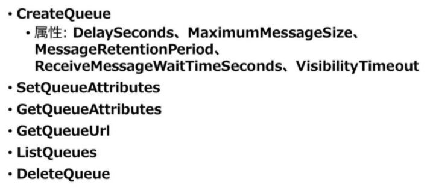
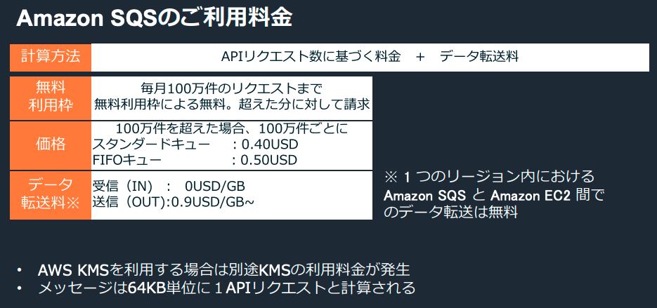

App Integration
AWS SAA: ECS/EKS, Lambda, SWF, Step Functions
SQS: Simple Queue Service
Ref
- AWS SAA: SQS, SNS, SES, AWS IoT
- https://d1.awsstatic.com/webinars/jp/pdf/services/20190717_AWS-BlackBelt_AmazonSQS.pdf
キューの種類
- 結果整合性。複数 AZ に保存される。
- メッセージ最大 256 KB(属性含む)。
- 作成後にキューの種類を変更することはできない。
- FIFO キューのスループット: 300 TPS。最大 10 通のバッチ送信で 3,000件/秒。
- 冪等性(idempotency): 数学において冪等性（巾等性とも書くが読み方は同じ）は、大雑把に言って、ある操作を1回行っても複数回行っても結果が同じであることをいう概念。
SendMessage API
Ref. SendMessage
DelaySeconds パラメータ
- メッセージタイマー。キューのデフォルト値に優先する。
- FIFO キューではサポートされない。
MessageAttribute パラメータ
- Name, Type, Value で構成される。
- Type: String, Number, Binary, カスタム (Binary.gif, Binary.png 等)
- https://docs.aws.amazon.com/ja_jp/AWSSimpleQueueService/latest/SQSDeveloperGuide/sqs-message-metadata.html
MessageDeduplicationId パラメータ
- FIFO キューのメッセージ重複排除 ID 機能。
- 同一の重複排除 ID が設定されたメッセージがキューへ送信されても 5 分間はキューに挿入されない。
- https://docs.aws.amazon.com/ja_jp/AWSSimpleQueueService/latest/SQSDeveloperGuide/using-messagededuplicationid-property.html
MessageGroupId パラメータ
- FIFO キューのメッセージグループを指定する ID。
- 同じグループのメッセージは順序通り処理されるが別グループのメッセージとの順序は保証されない。
- 例えばユーザごとにリクエスト順序が保証されれば十分な場合、ユーザ ID をグループ ID とすれば良い。
- https://docs.aws.amazon.com/ja_jp/AWSSimpleQueueService/latest/SQSDeveloperGuide/using-messagegroupid-property.html
SendMessageBatch
- 最大 10 通のバッチ送信。
ReceiveMessage
MaxNumberOfMessage
- バッチ受信。
- デフォルト 1、最大 10。
WaitTimeSeconds
-
ショートポーリング (デフォルト)
- SQS キューは分散したサーバ群で実装されている (分散メッセージキュー )
- ReceiveMessage はランダムサンプリングされたサーバ群のサブセットからメッセージを受信。
- 全てのメッセージが返らないことがある。
-

-
ロングポーリング
- WaitTimeSeconds パラメータに 0 より大きい値を指定。(最大 20 秒)
- API コール数を削減。全サーバにクエリを実行し、メッセージが空の場合も指定時間だけ待機。
- 利用可能なメッセージが取れ次第返る。
- https://docs.aws.amazon.com/ja_jp/AWSSimpleQueueService/latest/SQSDeveloperGuide/sqs-short-and-long-polling.html#sqs-long-polling
VisibilityTimeout (可視性タイムアウト)
- 受信メッセージが他のコンシューマに再処理されない時間。デフォルト 30 秒。最大12時間。
- コンシューマ障害でメッセージの処理に失敗した場合に他のコンシューマがタイムアウト後に再処理できる。
- 可視性タイムアウトを動的に変更可能。
- コンシューマでの処理時間が予測しづらい場合、処理状況に応じて可視性タイムアウトを動的に変更する。
- https://docs.aws.amazon.com/ja_jp/AWSSimpleQueueService/latest/SQSDeveloperGuide/sqs-visibility-timeout.html
DeleteMessage 処理
-
キューから受信したメッセージはすぐには削除されない。DeleteMessage で明示的に削除する。
- 受信される前に送信者が削除することも可能。
-
削除しない場合は保持期間まで保持される。(デフォルト4日、最小60秒、最大14日)
- 保持期間はキューの作成時か SetQueueAttributes 処理で変更可能。
- DeleteMessageBatch 処理: 最大 10 個を一括削除。
- PurgeQueue 処理: キュー内の全メッセージを削除。
キューに対する処理

- DelaySeconds: 遅延キュー。最大15 分、デフォルト 0 秒。
- MaximumMessageSize: メッセージの最大バイト数。最大/デフォルト 256 KB。
- MessageRetentionPeriod: メッセージ保持期間。最大 14日、デフォルト 4日。
- ReceiveMessageWaitTimeSeconds: ロングポーリング。最大 20秒。デフォルト 0秒。
- VisibilityTimeout: 最大 12時間。デフォルト 30秒。
DelaySeconds: 遅延キュー(delay queues)・メッセージタイマー
- 遅延キュー: CreateQueue でキュー全体に遅延を設定
- メッセージタイマー: SendMessage でメッセージ毎に遅延を設定
- 両者ともデフォルトの遅延は 0 秒、最大は 15 分。
- https://docs.aws.amazon.com/ja_jp/AWSSimpleQueueService/latest/SQSDeveloperGuide/sqs-message-timers.html
- https://docs.aws.amazon.com/ja_jp/AWSSimpleQueueService/latest/SQSDeveloperGuide/sqs-delay-queues.html
DLQ

- 指定した最大受信回数に達する (削除せずに再度受信する) とメッセージを DLQ に移動する。
- メッセージを受信するたびに増分する ReceiveCount が RedrivePolicy の maxReceiveCount を超えると DLQ にメッセージを (元のメッセージ ID で) 移動する。
- CreateQueue または SetQueueAttributes の RedrivePolicy で DLQ を設定できる。
- https://docs.aws.amazon.com/ja_jp/AWSSimpleQueueService/latest/SQSDeveloperGuide/sqs-dead-letter-queues.html
IAM ポリシー / Amazon SQS ポリシー (リソースベース)
-
共有キュー (クロスアカウント)
- IAM ポリシーまたは Amazon SQS ポリシー設定でクロスアカウントでの利用が可能。
- 共有キューへのリクエスト・転送量コストは所有者持ち。
- クロスリージョンは不可。
-
Amazon SQS ポリシーの操作
- CreateQueue/SetQueueAttributes: ポリシー全体をキューに設定する。
- AddPermission/RemovePermission: 特定プリンシパルに対するポリシーの追加・削除を行う。
SSE
-
KMS による SSE (デフォルト OFF)。
- AWS マネージドまたは独自の CMK を指定できる。
-
暗号化の対象はメッセージ本文のみ。
- メッセージ属性やキュー自体の属性やメトリクスは対象外。
-
ポリシー設定方法
-
CMK のリソースポリシー (キーポリシー)
- service.amazonaws.com に kms:GenerateDataKey, kms:Decrypt を許可。
- kms:GenerateDataKey は平文の CDK を返すので暗号化が可能。
-
プロデューサの IAM ポリシー
- CMK の ARN に対して kms:GenerateDataKey, kms:Decrypt を許可。
- 暗号化するだけなら本来は Decrypt 不要だが、新しく生成された CDK のインテグリティチェックのために Decrypt をコールするとのこと。
- キューの ARN に対して sqs:SendMessage を許可。
-
コンシューマの IAM ポリシー
- CMK の ARN に対して kms:Decrypt を許可。
- キューの ARN に対して sqs:ReceiveMessage を許可。
-
- https://docs.aws.amazon.com/ja_jp/AWSSimpleQueueService/latest/SQSDeveloperGuide/sqs-key-management.html

キューの用途
- バッファリング、デカップリング、非同期化、並列処理、ファンアウト
- システムのデカップリング (疎結合) と非同期化/並列処理
- SNS → SQS 連携による並列処理
- 複数の SQS キューを SNS トピックにサブスクライブさせることで１つのメッセージを並列処理。
- SQS の先にはそれそれの加工処理とデータシンクへの保存を実装したコンシューマがいる。
- Lambda を直接サブスクライバにせず間に SQS を入れるのは非同期化のため。Lambda 処理の先がダウンしてもキューにデータが残っているので復旧後に処理できるため。
- SNS → SQS のリクエストは無料。
- SQS メトリクスに対して CloudWatch アラームをかけてしきい値を超えた場合に Auto Scaling で EC2 のワーカーインスタンスをスケールアウト。
- SQS の未処理メッセージ数をメトリクスとした CloudWatch アラームにより Auto Scaling でスポットインスタンス (スポットフリートリクエスト) を利用して安価にバッチ処理などを行うイディオムがある。
AWS::SQS::Queue
-
QueueName
- FIFO キューは .fifo サフィックスをつけるルールがある
-
RedrivePolicy
- DLQ の設定
- deadLetterTargetArn : String
- maxReceiveCount : Integer
-
https://docs.aws.amazon.com/AWSCloudFormation/latest/UserGuide/aws-properties-sqs-queues.html
API
- https://docs.aws.amazon.com/AWSSimpleQueueService/latest/APIReference/API_Operations.html
- https://boto3.amazonaws.com/v1/documentation/api/latest/reference/services/sqs.html
- PurgeQueue: メッセージの全削除。
- DeleteQueue: キュー自体の削除。メッセージが残っていても消せる。
Amazon MQ
- Apache ActiveMQ のマネージドメッセージブローカーサービス
-
業界標準 API とプロトコルをサポート
- JMS (Java), NMS (.NET), AMQP, STOMP, MQTT, WebSocket
- アプリケーションを書き換えることなく Amazon MQ に移行できる。
-
アクティブ/スタンバイブローカー (オプショナル)
-
マルチ AZ で高可用性を実現。
- アクティブブローカーのみが使用される。スタンバイはリードレプリカではない。
-
ブローカーの共有ストレージはデフォルトで EFS (高可用/高耐久) が使用される。
- 低レイテンシー/高スループットが必要な場合は EBS も使用できる。
-
SNS: Simple Notification Service
概要
- １対多の Pub/Sub サービス。
-
トピック
- 通信チャネル。
-
パブリッシャ
- トピックを作成。メッセージを送信する。
- AWS サービスの一部もパブリッシャとして登録できる。
- S3 イベント、CloudWatch Events の宛先は SNS, SQS, Lambda。
- CloudWatch アラームは SNS, Auto Scaling, EC2 アクション。
-
サブスクライバ
- プロトコル+エンドポイントを指定してトピックをサブスクライブ。
- SQS, Lambda, HTTP(S), SMS/モバイルプッシュ, Email, Chatbot
- SES と異なり Email のフォーマットは指定できない。Subject, Message 文字列を渡すだけ。
-
メッセージ
- 最大 256 KB。属性含む。
- JSON, テキスト。
-
配信順序は保証されない。
- SQS FIFO キューをサブスクライバとする場合 FIFO トピックも作れる。
-
配信回数は少なくとも 1回。２回以上配信されることもある。
- パブリッシュ済みメッセージは削除できない。
オペレーション
-
CreateTopic
- 最大 3000 個のトピックを作成できる。
- 指定された名前のトピックを既に所有している場合は新しいトピックが作成されずに ARN が返される。
-
Subscribe
- エンドポイントに確認メッセージを送信してサブスクライブを準備する。
- サービスが (エンドポイントへの確認を要求することなく) サブスクリプションを即座に作成した場合はサブスクリプション ARN を返す。そうでない場合は "pending confirmation” 文字列を返す。
- DLQ を指定できる。
-
ConfirmSubscription
- 確認メッセージに含まれるトークンを検証してエンドポイントでのサブスクライブを確認する。
- トークンが有効である場合、新しいサブスクリプション ARN を返す。
- 確認トークンの有効期間は 3日間。
- AuthenticateOnUnsubscribe パラメータ (Bool)
- トピックオーナーとサブスクリプションオーナー以外が unsubscribe できなくなる。
- 確認メールに含まれる unsubscribe リンクが誤って踏まれて unsibscribe されるのを避けられる。
- true にする場合 ConfirmSubscription アクションに AWS 署名が必要となる。
- 例) aws sns confirm-subscription …中略… --authenticate-on-unsubscribe true
-
https://docs.aws.amazon.com/sns/latest/api/API_Operations.html
Subscribe: RawMessageDelivery (Raw メッセージ配信)
- 通常は JSON 形式で SNS メタデータを含んだメッセージが配信される。
- サブスクライブ時に Raw メッセージ配信を有効にするとメッセージ本文と属性のみが配信される。
Subscribe: FilterPolicy
-
サブスクリプションに属性のフィルタを割り当て、マッチしたメッセージのみ配信させることができる。
- 文字列マッチング: 完全一致、前方一致、"anything-but"
- 数値マッチング: 完全一致、範囲での比較
-
例
配信ポリシー
- リトライポリシーが AWS 管理とカスタマー管理のエンドポイントで異なる。
- 全てのリトライが失敗するとサブスクリプションに指定した DLQ に送信される。
- HTTP/HTTPS についてはトピック/サブスクリプション属性に DeliveryPolicy を指定できる。
- https://docs.aws.amazon.com/ja_jp/sns/latest/dg/sns-message-delivery-retries.html
SetTopicAttributes: トピック属性
-
DeliveryPolicy
- HTTP/HTTPS の配信ポリシー。
-
DisplayName
- The display name to use for a topic with SMS subscriptions.
-
Policy
- Amazon SNS ポリシー (リソースベースのポリシー)。
- By default, only the topic owner can publish or subscribe to the topic.
-
KmsMasterKeyId
- KMS による SSE の設定。サブスクライバには SNS サービスで復号後に配信される。
SetSubscriptionAttributes: サブスクリプション属性
- DeliveryPolicy
- FilterPolicy
- RawMessageDelivery
- RedrivePolicy
- DLQ
AWS Step Functions
Ref.
- Doc: https://docs.aws.amazon.com/ja_jp/step-functions/latest/dg/welcome.html
- BB: https://d1.awsstatic.com/webinars/jp/pdf/services/20190522_AWS-Blackbelt_StepFunctions.pdf
概要
ワークフロー
- ステートマシンを図で表したのがワークフロー
ASL: Amazon States Language
- JSON 形式のワークフロー定義言語
- チェックツール: awslabs/statelint
- ASL 記述チェックツール
- Ruby ベース: gem install statelint
ステートマシン
- 各要素 (=状態) を State と呼ぶ
-
実行方法
- コンソール・AWS CLI・SDK による実行 (StartExecution)
- API Gateway: 統合バックエンドとして登録
- CloudWatch Events: S3 の保存や EC2 起動を契機
-
最大実行時間は 1年。
- ステートマシンの設定
- Comment: テキストで任意のコメントを記述。
- StartAt: 一番最初に実行する State を指定する。
- TimeoutSeconds;
- ステートマシンの実行時間がこの秒数を超過するとタイムアウトエラーになり実行が終了する。
- ステートマシン全体の TimeoutSeconds とタスク個別の TimeoutSeconds が指定できる。
ステート
Wait
- SecondsPath, TimestampPath により入力データのフィールド値を使用して任意の秒数やタイムスタンプで待機できる。
Pass
- 入力値のだだ流しだけでなく、ResultPath, Parameters による変換もできる。
Parallel
- 並列実行される State のいずれかが失敗すると Parallel の State 全体が失敗扱いになる点に注意。
Map
- 入力データの配列要素ごとにタスクを並列実行する。
- 2019 に追加された新しいステート。
Choice
- Choices フィールドの配列に Choice ルール(判定条件と Next) を指定。
End: true
- Succeed, Fail 以外は End: true で実行を終了できる。
Retry/Catch
- Task, Parallel に指定できるフィールド。
-
ErrorEquals フィールドに対象となるエラーを指定。
- Lambda 関数内で独自実装した例外などを条件とすることも可能。
-
Catch では Next フィールドで別のステートに遷移。
Task から呼び出し可能なサービス
- Lambda : 関数実行
- Activity: 自身で定義したサービス
- ECS : ECS タスクの実行
- AWS Batch : ジョブの起動、ジョブ完了の待機
- Glue : ジョブの実行
- SageMaker : トレーニングジョブ、トランスフォームジョブの起動
- DynamoDB : アイテム取得、新規アイテム登録
- SNS : トピックへのメッセージ送信
- SQS : キューへのメッセージ送信
- SDK サービス統合: 対応サービスの任意の API を実行できるようになった。
Activity
作成
- CreateActivity で Activity の ARN を取得。
- Task の Resource に ARN を指定。
サーバやコンテナで実装した Activity ワーカーからポーリング
-
GetActivityTask でポーリング
- 入力: Activity の ARN
- 出力: input, taskToken
-
SendTaskSuccess/SendTaskFailure で成功/失敗をレポート
- 入力: taskToken, output (SendTaskFailure は cause, error)
ハートビート: SendTaskHeartbeat … デッドロック回避
-
Task に TimeoutSeconds を設定する。
- GetActivityTask で taskToken 提供後、TimeoutSeconds 以上応答がないと Task が失敗する。
-
SendTaskHeartbeat でハートビートを送信する。
-
HeartbeatSeconds フィールド (オプショナル):
- TimeoutSeconds の秒数より小さいタイムアウトをハートビートに設定したい場合。
- ハートビート間隔が指定秒数を超過した場合、Task は States.Timeout エラーで失敗する。
-
https://docs.aws.amazon.com/ja_jp/step-functions/latest/dg/amazon-states-language-task-state.html
GetActivityTask と SendTaskSuccess/Failure は別の場所から行ってもよい
- SES で URL に taskToken を埋め込んだ Email を送信。
- API Gateway から統合リクエストで SendTaskSuccess/Failure を送れる
- https://aws.amazon.com/jp/blogs/compute/implementing-serverless-manual-approval-steps-in-aws-step-functions-and-amazon-api-gateway/
入出力データ
ペイロードサイズ
- 最大 256KB
InputPath/OutputPath
- 入出力の JSON から次のステート渡すフィールドをフィルタする。
- JsonPath 構文で指定
Parameters
- 入力 JSON のフィールド値を使って別の JSON を再構成。
- 入力から JsonPath で取得するフィールド値は .$ で終わるようにする。
ResultPath
- 入力 JSON に出力 JSON のフィールドをマージする。出力 JSON を受け取るフィールド名を指定。
- ResultPath がないと出力 JSON がそのままアウトプットとなる。
- OutputPath でさらにフィルタできる。
その他
- State への入出力最大データサイズは 256KB に拡張されている。
- Ref. https://aws.amazon.com/jp/about-aws/whats-new/2020/09/aws-step-functions-increases-payload-size-to-256kb/
Task の Resource フィールドの指定方法
- Lambda や Activity の ARN を直接指定する方法と
- 連携サービス固有の pre-defined の ARN を書いて Parameters でインプットを渡す方法がある
- https://docs.aws.amazon.com/ja_jp/step-functions/latest/dg/connect-to-resource.html
"Send message to SNS":{
"Type":"Task",
"Resource":"arn:aws:states:::sns:publish",
"Parameters":{
"TopicArn":"arn:aws:sns:us-east-1:123456789012:myTopic",
"Message":"Hello from Step Functions!"
},
"Next":"NEXT_STATE"
}
Task からの連携サービス呼び出し方法
- Default Response
- Run a Job (.sync)
- Wait for a Callback (.waitForTaskToken) ... Callback Pattern
Ref. https://docs.aws.amazon.com/step-functions/latest/dg/connect-supported-services.html
.sync とかは Resource に指定する ARN の最後に付ける
Default Response
- 単純に連携サービスの REST API を呼んでレスポンスがあれば終了。
- DynamoDB や SQS にデータを突っ込むなど。
Run a Job (.sync)
- AWS Batch や ECS タスク、Glue ジョブなどの終了を待つ。
Wait for a Callback (.waitForTaskToken)
- SQS/SNS などに Task Token 付きで入力データを投入。
- SendTaskSuccess / SendTaskFailure API でトークンが返されるまで待つ。
- https://www.infoq.com/news/2019/08/aws-step-functions-callback/
- https://docs.aws.amazon.com/ja_jp/step-functions/latest/dg/connect-to-resource.html#connect-wait-token
標準ワークフロー
- 長時間実行され、耐久性が高く、監査可能なワークフローに最適。
- 最長 1 年間実行でき、実行完了後 90 日以内であれば Step Functions API を使用して実行履歴を取得できる。
- at-most-once モデル: Retry を指定しない限り、タスク/状態が複数回実行されることはありません。
- 状態移行ごとの価格設定
Express ワークフロー
- 大量イベント処理に最適: IoT データ取り込み、ストリーミングデータ処理/変換、モバイルアプリのバックエンドなど
- 最大 5 分間。
- at-least-once モデル: ステートが複数回実行される可能性がある。
- 実行回数、実行時間、消費されたメモリによって課金されます。
- Run a Job (.sync) / Wait for Callback (.waitForTaskToken) サポートしない。
Ref. Standard Workflows vs. Express Workflows
Actions
- CreateStateMachine DeleteStateMachine UpdateStateMachine ListStateMachines DescribeStateMachine DescribeStateMachineForExecution
- StartExecution StopExecution ListExecutions DescribeExecution GetExecutionHistory
- CreateActivity DeleteActivity DescribeActivity ListActivities
- GetActivityTask SendTaskFailure SendTaskSuccess SendTaskHeartbeat
- TagResource UntagResource ListTagsForResource
- https://docs.aws.amazon.com/step-functions/latest/apireference/API_Operations.html
Kinesis Data Stream
-
コンシューマが Data Streams のシャードからデータレコード(>=1MB) を取り出して分析処理。
- KCL (Kinesis Client Library) を使い EC2 上のアプリや Lambda や Apache Spark で実装。
-
データレコードに含まれるパーティションキーによりレコードが保存されるシャードが決まる。
-
キューと異なりシャードから取り出したデータレコードは削除せず一定期間 (24h~7d) 保持する。
- コンシューマはデータの取得範囲をシーケンス番号で指定して最新データを取得。
-
スケーリング方法
- スケールアップ: シャード分割、EC2 インスタンスサイズの増強
- データ量に応じてシャードを Auto Scaling できる。